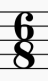
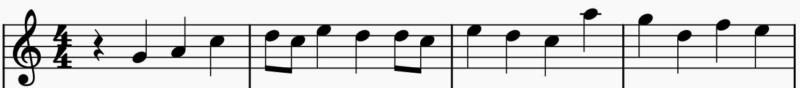
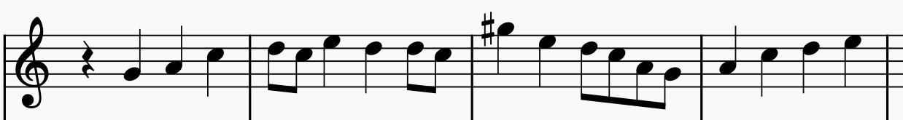

声学分部社课 - 第一次作业
本页面为荆棘鸟声学分布社课第一次作业。
请将答案发送至me@angine.tech，注明cn。
1. 请为以下四项按照先后顺序排序：①编曲 ②作曲 ③母带 ④混音
4. 请聆听下面的音频。第一个音符和最后一个音符相比
8. 请看下面图片中的符号，其含义是

- 六八拍，即六分音符为一拍，每小节为八拍
- 六八拍，即八分音符为一拍，每小节有六拍
- 八六拍，即六分音符为一拍，每小节为八拍
- 八六拍，即八分音符为一拍，每小节有六拍
9. 音乐的BPM为120，四三拍，则一个全音符的时长为
附加题 请将下图所示的五线谱翻译成简谱（选做）

